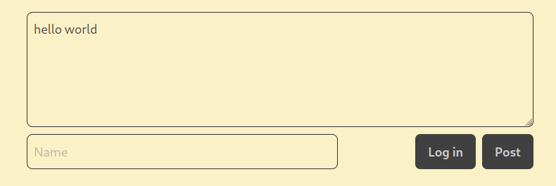
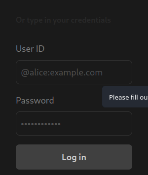
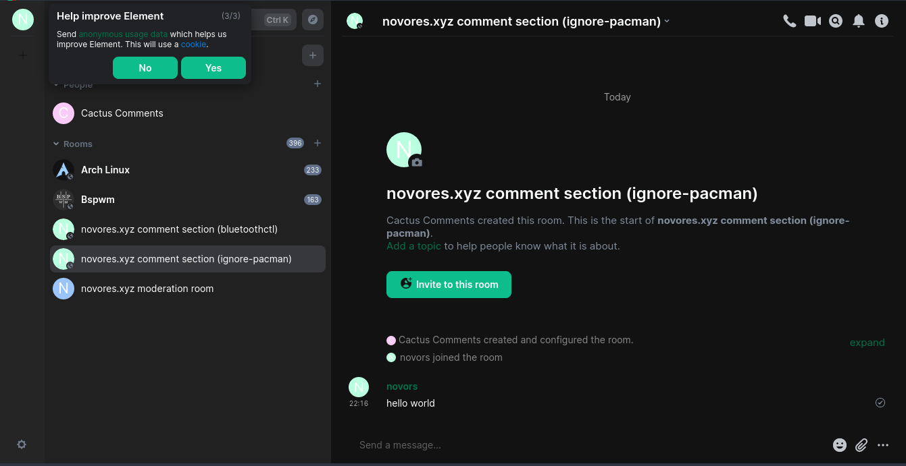

Menambahkan Cactus Comments Ke Dalam Hugo
Table of Contents
Pengantar
Hugo merupakan salah satu Static Site Generator yang kaya akan fitur. Salah satunya fitur komentar, untuk menambahkan fitur komentar ini kita hanya perlu menambahkan shortcode ke dalam fronmatter Blog kita. namun sayangnta fitur ini hanya tersedia untuk Disqus. saya pribadi tidak terlalu menyukai disquss karena proprietary-nya.
jika kita ingin menambahkan komentar dari provider yang lain, maka kita harus menulis shortcode itu sendiri.
saya lebih memilih Cactus Comment yang dimana komentar yang masuk kedalam blog/website akan langsung terhubung melalui akun Matrix.
Persyaratan
Pastikan kamu punya akun Matrix. Jika belum punya silahkan register disini. link tersebut mengarah ke Element, salah satu client matrix. UI/UX element sangat mudah dimengerti sehingga cocok untuk pengguna baru matrix.
Daftarkan situs mu
jika sudah register dan login, hal pertama yang harus dilakukan adalah mendaftarkan situs mu dengan Cactus Comment. Buat chat baru dengan @cactusbot:cactus.chat
lalu ketik.
register <nama situs kamu>
nama situs tidak harus sama dengan nama domain, buat nama situs yang unik
jika sudah selesai kita lanjut ke tahap selanjutnya.
Tahap Integrasi
Sekarang kita memasuki tahap Integrasi Cactus Comment dengan Hugo.
Buat Shortcode
untuk membuat shortcode di hugo, kita tinggal menyalin code berikut ke dalam folder layout/shortcodes/. dalam kasus saya, folder tersebut terdapat dalam folder theme/<theme-name>.
<script type="text/javascript" src="https://latest.cactus.chat/cactus.js"></script>
<link rel="stylesheet" href="https://latest.cactus.chat/style.css" type="text/css">
<div id="comment-section"></div>
<script>
initComments({
node: document.getElementById("comment-section"),
defaultHomeserverUrl: "https://matrix.cactus.chat:8448",
serverName: "cactus.chat",
siteName: "<YOUR-SITE-NAME>",
commentSectionId: "{{ index .Params 0 }}"
})
</script>
jangan lupa untuk mencantumkan nama situs mu di kolom siteName di atas.
Baris code diatas sangat dapat dicostumisasi lihat panduan nya disini
Tambahkan Comment
Untuk menambahkan komentar ke dalam post kita hanya perlu menambahkan baris berikut
{{< chat room-chat >}}
di akhir setiap post yang telah kita buat.
fungsi room-chat, sebagai nama ruang chat kamu di dalam matrix.
kamu dapat membuat pilihan apakah akan memisahkan ruang chat untuk setiap postingan (misalnya nama room diubah menjadi title postingan kamu) atau menyamakan room untuk setiap postingan (setiap postingan diberi nama room yang sama)
Testing
Untuk berkomentar di cactus comment, kamu mendapatkan 2 opsi. pertama berkomentar sebagai akun anonymous(tanpa login) dan yang kedua menggunakan akun matrix(dengan login)
berikut tampilan jika cactus comment berhasil dimasukkan. 
jika ingin login sebelum berkomentar maka klik tombol log in, selanjutnya akan muncul jendela seperti dibawah tinggal masukkan
username akun matrix mu yang biasanya berformat @username:matrix.org dan jangan lupa juga passwordnya.

komentar yang dimasukkan akan masuk ke dalam room chat di client matrix, nama room bergantung pada nama comment yang telah dimasukkan sebelumnya. In my case saya menggunakan keyword dari title postingan. 
dalam gambar diatas saya menggunakan nama ignore-pacman, dimana nama itu diambil dari keyword title postingan saya. perhatikan kata hello world di dalam chat.
hanya itu yang perlu dilakukan untuk menambahkan cactus-comments kedalam blog hugo.
Terimakasih telah membaca..